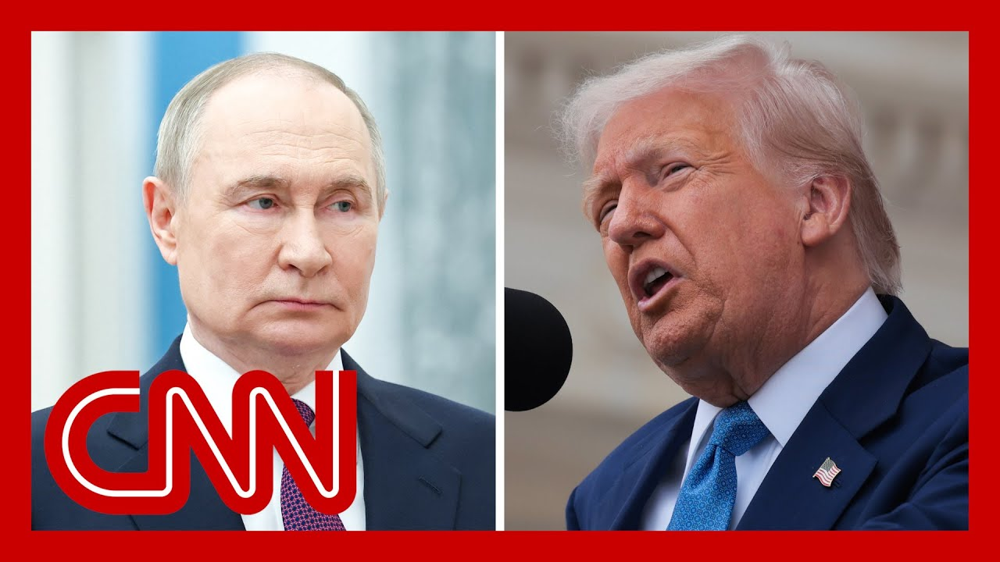

【特朗普：普京对乌克兰的升级攻击是在“玩火”】
Summary: President Trump once again criticized Putin and is considering imposing new sanctions on Moscow, as Russia’s attacks on Ukraine escalate. Ukrainian officials say the latest strike killed at least two people and injured sixteen. Meanwhile, Moscow condemned Germany and other countries for lifting the ban on Ukraine’s use of long‑range missiles to strike targets inside Russia.
摘要： 特朗普总统再次抨击普京，并考虑对莫斯科实施新制裁，因俄罗斯对乌克兰的袭击升级。乌克兰官员称，最新袭击造成至少2人死亡、16人受伤。与此同时，莫斯科谴责德国等国解除对乌克兰使用远程导弹打击俄罗斯境内目标的禁令。

⏱️ Estimated Reading Time: 12 min
President Trump is lashing out at Vladimir Putin again today while issuing new threats against the Kremlin.
特朗普总统今天再次猛烈抨击弗拉基米尔·普京，并向克里姆林宫发出新的威胁。
Just moments ago, in a social media post, he wrote What Putin doesn't realize is that if it weren't for me, lots of really bad things would have already happened to Russia, and I mean really bad.
就在不久前，他在社交媒体上发文称，普京没有意识到，如果不是因为我，俄罗斯早已遭遇许多非常糟糕的事情，而且是非常糟糕的事情。
He's playing with fire.
他这是在玩火。
Sources tell CNN the president is now considering new sanctions on Moscow, as he grows more frustrated over the Kremlin's escalating attacks on Ukraine.
消息人士告诉CNN，总统现在正考虑对莫斯科实施新的制裁，因为他对克里姆林宫对乌克兰的升级攻击越来越感到沮丧。
This is happening after another wave of Russian strikes overnight.
这是在俄罗斯又一波夜间袭击之后发生的。
They pounded numerous parts of the country, and Ukrainian officials say at least two people were killed and 16 were wounded.
他们袭击了该国的多个地区，乌克兰官员称至少2人死亡、16人受伤。
In the meantime, Moscow is blasting a decision by Germany and other Ukrainian allies, including the U.S., to lift a ban on firing long range missiles into Russia.
与此同时，莫斯科谴责德国和其他乌克兰盟友（包括美国）解除对乌克兰向俄罗斯境内发射远程导弹的禁令。
That's a move that allows Ukraine to strike military targets that are much deeper inside of Russia.
此举允许乌克兰打击俄罗斯境内更纵深的军事目标。
It's a decision that the Kremlin is calling dangerous.
克里姆林宫称这一决定是危险的。
CNN's Alayna Treene is with us now from the White House.
CNN的阿莱娜·特里尼现在在白宫为我们报道。
Alayna, what are you learning about Trump's growing frustration with Putin?
阿莱娜，关于特朗普对普京日益增长的挫败感，你了解到了什么？
Yeah, it's clear, Brianna, there really has been a shift in tone and rhetoric and also just a private frustrations that the president is feeling when it relates to and specifically Russian President Vladimir Putin.
是的，布里安娜，很明显，总统在与俄罗斯总统弗拉基米尔·普京相关的问题上，语气和言辞确实发生了变化，同时也感到私下里的挫败感。
Look, I think it's clear that the president has so far been hesitant to put any sort of sanctions and pressure of sanctions and economic pressure really, on Russia through this entire process, because privately, he's noted that he believes that doing so could actually push Russia farther away from the negotiating table.
我认为很明显，总统迄今为止一直不愿在整个过程中对俄罗斯施加任何形式的制裁和经济压力，因为他私下里认为这样做可能会让俄罗斯更远离谈判桌。
Thus far, he's really been trying to do as much as he can to fulfill his campaign promise of bringing both Russia and Ukraine together to find some sort of off ramp to this war and ultimately, a ceasefire.
到目前为止，他一直在尽力履行竞选承诺，即让俄罗斯和乌克兰走到一起，为这场战争找到某种出路，并最终实现停火。
But increasingly, both he and his closest advisers are recognizing that perhaps Putin is not necessarily living up to what he's been telling Trump behind closed doors, and people are growing increasingly unsure of whether or not he's actually ready to strike some sort of deal to end this war with Ukraine.
但越来越多的是，他和他的最亲密顾问们认识到，普京可能并不一定兑现他在闭门会谈中对特朗普的承诺，人们越来越不确定他是否真的准备好达成某种协议来结束与乌克兰的战争。
Because of that, we're learning now behind the scenes that he is considering potentially wanting to place sanctions on Russia and try to kind of up the ante with them and show President Putin that he's very serious about this.
因此，我们在幕后了解到，他正在考虑可能对俄罗斯实施制裁，并试图提高赌注，向普京总统表明他对此非常认真。
Of course, this comes as we know that many of the United States European allies, and even some people here in the United States, people like Senator Lindsey Graham, have really been pressuring and trying to influence this administration to do just that, to put and try to force their hand.
当然，我们知道许多美国的欧洲盟友，甚至美国国内的一些人，比如参议员林赛·格雷厄姆，一直在施压并试图影响政府这样做，试图迫使他们采取行动。
Now, I do think it's very interesting to see how the president has been talking about these most recent attacks from Russia on Ukraine, because the way that put it, particularly in that TruthSocial post today, when he said Putin doesn't realize that if it weren't for me, things would have already happened to Russia.
现在，我认为看到总统如何谈论俄罗斯最近对乌克兰的袭击非常有趣，因为他在今天的TruthSocial帖子中特别提到，普京没有意识到如果不是因为我，俄罗斯早已遭遇这些事情。
He said that he thinks Putin has gone crazy.
他说他认为普京已经疯了。
He said that this weekend in a separate post.
他在周末的另一篇帖子中说过这一点。
I mean, it's clear that the president is starting to kind of lose patience with Russia.
我的意思是，很明显总统开始对俄罗斯失去耐心。
And I know from my conversations with several Trump administration officials that he really did believe that he would be able to make more progress at this point to so many months now into his second term.
我从与几位特朗普政府官员的谈话中了解到，他真的相信自己在本届任期已经过去这么多个月后，此时能够取得更多进展。
And so really, I think the next few days are going to be pretty critical to learning whether or not is actually going to move forward and try to put this pressure of sanctions on Russia, or if he'll continue to kind of wait and see if he can still try to get any sort of deal with both of these countries to come together for an ultimate ceasefire.
因此，我认为接下来的几天将非常关键，看看他是否会真正推进并试图对俄罗斯施加制裁压力，或者他是否会继续观望，看看是否还能尝试让这两个国家达成某种协议，最终实现停火。
Brianna.
布里安娜。
Alayna Treene, live for us at the White House.
阿莱娜·特里尼，在白宫为我们现场报道。
Thank you.
谢谢。
Boris?
鲍里斯？
Let's talk about these latest developments with retired General Wesley Clark.
让我们与退役将军韦斯利·克拉克讨论这些最新进展。
He's a former NATO Supreme Allied Commander.
他是北约前最高盟军指挥官。
General Clark, great to see you, as always with these stepped up attacks over recent days, what would you say is Russia's immediate objective on the battlefield?
克拉克将军，很高兴见到你，最近几天袭击升级，你认为俄罗斯在战场上的直接目标是什么？
Russia's main objective is to continue to pressure, try to break the government of Ukraine, break the will of the people, to continue to resist.
俄罗斯的主要目标是继续施压，试图瓦解乌克兰政府，打破人民继续抵抗的意志。
At the same time, it's pushing very hard in the north, in the center.
与此同时，它在北部和中部地区大力推进。
And the ultimate objective, of course, is in the south to sweep across the coast of the Black Sea and take Odessa.
当然，最终目标是在南部横扫黑海沿岸并占领敖德萨。
And that's what their objective would be for, let's say, September, October.
这就是他们在9月、10月的目标。
If they are successful in breaking through Ukrainian lines and drawing off the reserves into the north.
如果他们成功突破乌克兰防线并将预备队吸引到北部。
What would you say are the practical implications of having Germany and other Ukrainian allies lift these restrictions on Kyiv to fire into Russia for the first time?
你认为德国和其他乌克兰盟友首次解除对基辅向俄罗斯境内开火的限制的实际影响是什么？
Could that slow down the Russian advance?
这会减缓俄罗斯的推进吗？
I think the lifting of the restrictions is an important signal psychologically.
我认为解除限制在心理上是一个重要信号。
I think it's also marginally important, provided the United States is providing the intelligence to accurately target these long range strikes.
我认为这也具有一定的重要性，前提是美国提供情报以准确瞄准这些远程打击。
How many they are, what the inventory is and what the impact.
数量有多少，库存如何以及影响如何。
It remains to be seen.
还有待观察。
But there is a way to make a greater impact is to surge more U.S. artillery in small arms and the other items that Ukraine desperately needs right now.
但有一种方法可以产生更大的影响，那就是增加美国提供的火炮、轻武器和其他乌克兰目前急需的物品。
The administration so far has floated the idea of additional sanctions, and there is a bipartisan bill in the Senate proposing a 500% tariff on any country that is buying Russian energy right now.
政府迄今已提出额外制裁的想法，参议院有一项两党法案提议对目前购买俄罗斯能源的任何国家征收500%的关税。
Do you see that, financial disincentive as enough to sway Vladimir Putin toward the negotiating table?
你认为这种经济上的阻碍足以让弗拉基米尔·普京走向谈判桌吗？
Seems unlikely that that kind of a tariff can go in and go in effectively against countries like India and Gulf states who are involved in, directly or indirectly in the Russian oil trade.
这种关税似乎不太可能有效地针对印度和海湾国家等直接或间接参与俄罗斯石油贸易的国家。
But it's an important step, and it's very important for the president at this point.
但这是一个重要的步骤，对总统此时非常重要。
After 5 to 6 weeks of expressing frustration and threatening sanctions to move ahead and do something.
在表达挫败感并威胁制裁5到6周后，现在需要采取行动。
So whether it's that particular set of sanctions or something else, it's very important at this time that he take concrete action.
因此，无论是这一特定制裁还是其他措施，此时他采取具体行动非常重要。
This is not going to harm the prospect of negotiations.
这不会损害谈判的前景。
It's going to incentivize them.
这将激励谈判。
You mentioned bolstering Ukraine's ability to defend itself.
你提到增强乌克兰的自卫能力。
I wonder when you hear that Ukraine's air defenses overnight intercepted 43 Russian drones and other unmanned aerial vehicles.
我想知道当你听说乌克兰的防空系统一夜之间拦截了43架俄罗斯无人机和其他无人飞行器时，你有什么看法。
what is Ukraine's current aerial defense capacity?
乌克兰目前的防空能力如何？
How long can they sustain that kind of defense before needing extra ammunition?
他们能在需要额外弹药之前维持这种防御多久？
Well, they need it.
嗯，他们需要弹药。
They need it right now.
他们现在就需要。
First of all, they need additional Patriot missiles, and they need a couple of more Patriot batteries to go in, to protect.
首先，他们需要更多的爱国者导弹，还需要几套爱国者系统来保护。
But what's happening is the Russian drones are getting more sophisticated.
但现实情况是俄罗斯的无人机越来越先进。
They're sending in decoy drones.
他们派出诱饵无人机。
They assure heeds are flying higher.
它们飞得更高。
they have, different guidance systems.
它们有不同的制导系统。
So they're not as easily jammed.
因此它们不容易被干扰。
so, so all of this demands a response by Ukraine?
所以，所有这些都需要乌克兰做出回应？
Some of the responses of a different artillery systems, directed against the drones, using the F-16s and other aircraft more effectively against the drones, more Patriot and other, anti-aircraft missile systems from our allies can be sent out.
一些回应包括使用不同的火炮系统针对无人机，更有效地使用F-16和其他飞机对抗无人机，以及从盟友那里获得更多的爱国者和其他防空导弹系统。
But the point is, it's a dynamic battlefield, and Mr. Putin hasn't slacked off.
但关键是，这是一个动态的战场，普京先生并没有松懈。
He's doing everything he can, I think, to intensify this while at the same time, posturing forces to be prepared to go into, Belarus, through Belarus and into Lithuania, or, northeast Poland, by autumn.
我认为他正在尽一切努力加剧局势，同时部署部队准备在秋季通过白俄罗斯进入立陶宛或波兰东北部。
That's the threat.
这就是威胁。
General Wesley Clark.
韦斯利·克拉克将军。
always great to get your point of view.
总是很高兴听到你的观点。
Thanks for joining us.
感谢你的参与。
Thank you.
谢谢。